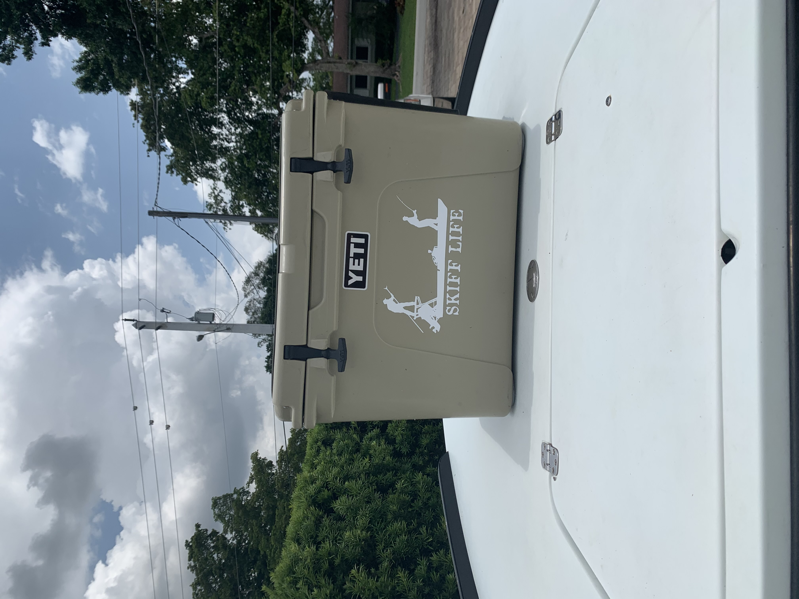

Welcome to Keys Time Charters, Inc.
The Gear

I have been running the 2003 Dolphin Super Skiff Kevlar for almost 8 years now.
This skiff gives us the perfect balance of shallow water accessibility along with
the ability to maintain a dry relaxing ride through the thickest of chop. The skiff
is powered by a 2006 evinrude e-tec 2 stroke outboard motor. The skiff has 2 live wells
along with 6 rod holders that will keep them in a safe posotion. There is also a large
storage compartment in the back that will keep all your belongings dry and secure
throughout the day.

Wondering how to keep your lunch nice and cool? The yeti cooler is the most
hardy cooler on the market. One bag of ice is all you need for an entire day of
fishing in the hot florida sun. I have been using yeti coolers since I began
backcountry fishing. There is nothing better than taking a lunch break after
catching fish all day knowing your perishables will be as if you took them out
of your own refridgerator.

The Gloomis E6x Inshore 7'6 rod is my favorite light tackle fishing rod. There
are many reasons why I choose this rod. The main reason for chosing this rod
is because of the distance you get out of ever cast. An effortless swing and your
bait soars through the sky landing in the honey hole. Long casting is essential
because fish can be spooky, so keeping your distance and having a rod that can reach
the fish from a distance can make all the differance.


Keys Time Charters, Inc.